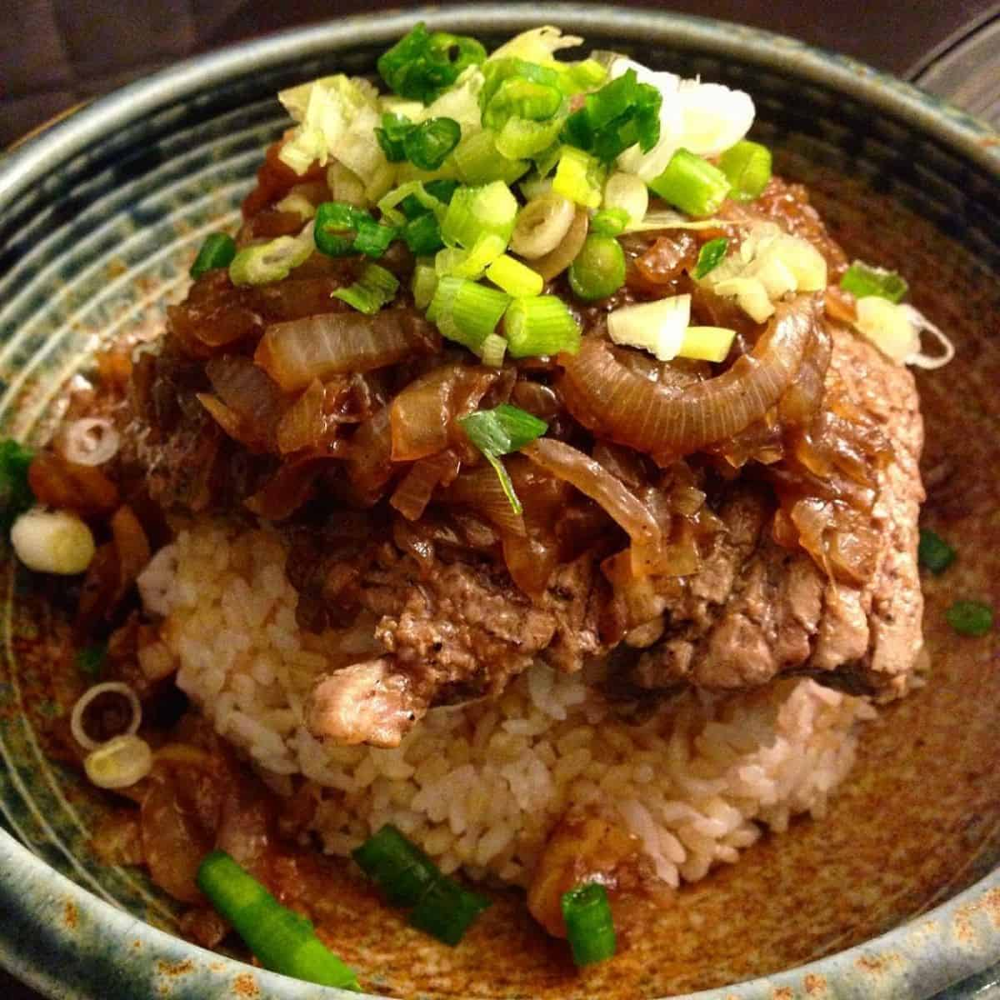

Chaliapin Steak Don

Description
Chaliapin steak don is the ultimate tender steak rice bowl. This dish is made up of refreshing umeboshi and shiso flavoured rice, topped with marinated steak, soft golden onions and a rich red wine sauce. It will literally melt your mouth!
Ingredients
- 2 thick sirloin steaks
- 3 white onions
- Pinch of salt and pepper
- 1 tbsp unsalted butter
- 1 tbsp beef fat or vegetable oil
- 300 g cooked Japanese short grain white rice
- 3 Umeboshi pickled plums
- 4 Shiso leaves or Ooba leaves
- 2 tbsp spring onions chopped
- 1 tbsp unsalted butter
- 75 ml red wine
- 1 tbsp soy sauce
- 1 tbsp water + 1 tsp corn starch
Steps
- Chop the onions finely.
- Remove the tendons from the beef and beat it with a meat tenderizer until as flat as possible.
- Cover meat on both sides with the chopped onion and leave for 30 minutes or more. Remove the onion and add salt and pepper.
- Cook the steak to your preference(most would prefer medium-rare). Remove from heat and melt 1 tablespoon of butter in a frying pan and fry the onion used for the beef until it changes color. Adjust the flavor with salt and pepper, then move the onion to the steak.
- Melt the remaining butter in the frying pan and fry the sides of the meat before taking it out.
- Add red wine to the frying pan used for the beef to deglaze it. Boil down the wine while scraping off the meat juice.
- Add soy sauce and mix with everything. Adjust seasonings to personal preferences.
- Thicken with dissolved potato starch.
- Put rice mixed with Umeboshi paste (pickled plum) in the donburi bowl. Place the beef on top and add plenty of sauce. Top with the finely chopped, cooked onions.